AI-Driven Software Engineering · Lesson #12 · Smart Campus Room Availability Checker · Lecture #12 security (SAST / DAST / SCA)
| Student | Don Vladimir, ID 24B030295 |
| Email subject | AI-Driven Software Engineering Practice #12, Don Vladimir, 24B030295 |
| Class time and day of week | Tuesday, 24 November 2026, 16:00–19:00 |
| AI tool, version, model | Bolt.new (StackBlitz), Bolt Agent, mode "Standard"; build mode for the implementation prompt and the fix prompt, Plan on (read-only) for the comparison/review prompt. Free plan (14K daily tokens left after the 3 prompts). Bolt does not show the underlying model name. |
| Code-based solution | Bolt project https://bolt.new/~/sb1-kqaeymwj · Version 17 = baseline (bookmarked) → V18 first implementation → V19 fixes → published.Live demo (Bolt Publish): https://smart-campus-room-ch-0k2r.bolt.host/ |
| Low-code solution | Budibase Community 4.1.0 (open-source, $0), self-hosted in Docker on my laptop, bound to 127.0.0.1:10000 only. App "Room Availability Checker" (published inside the local instance). No subscription bought. |
| Repository | https://github.com/coldkey12/SE-Practice12-LowCode — contract, both implementations (source + Budibase export), evidence, report |
The final code-based checker from the previous practices (Practice #10, Version 16 code) was opened in Bolt. The newest version, Version 17 ("Publish application", same code as V16), was bookmarked as the Practice #12 baseline before any change.
| Item | Baseline value |
|---|---|
| Version | Bolt Version 17 (= V16 code "Strictly validate time labels and availability"), live at https://smart-campus-room-ch-0k2r.bolt.host/ |
| Booking data | src/lib/data.ts: 5 fictional rooms (Curie Auditorium blocked), 6 fictional bookings (Athena Hall 101 09:00–09:50, 11:00–11:50, 15:00–15:45; Newton Lab 220 10:15–11:00; Turing Lab 305 14:00–15:30; Da Vinci Studio 13:30–14:30) |
| Expected behaviour | AC1–AC6 as in the slides: future start, 1–120 min, overlap → Unavailable (touching edges allowed), blocked → Unavailable, clear decision without changing bookings, understandable feedback for invalid input |
| Existing checks | npm test 26 passed (26) in the Bolt terminal and locally; lint and typecheck pass; npm audit: 0 production, 24 dev-tool vulnerabilities |
| Rule changes | None — booking rules were not changed to favour either approach. |
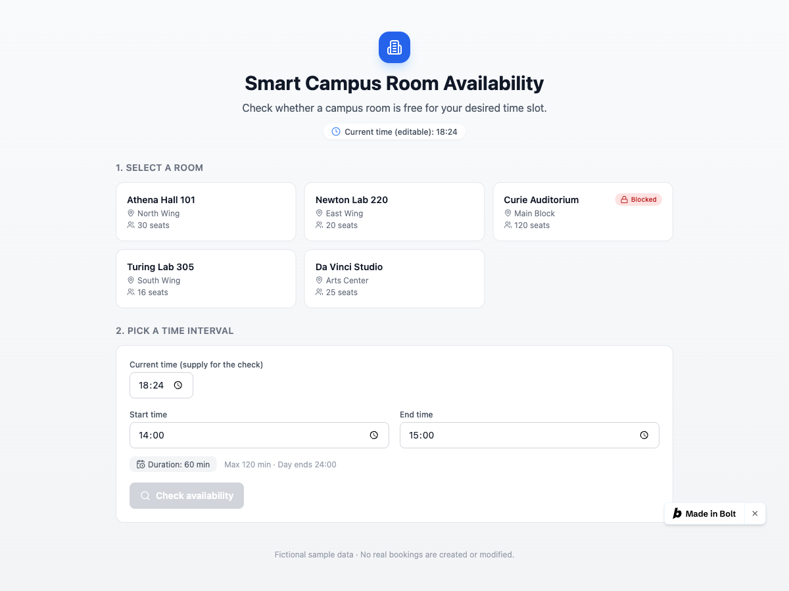
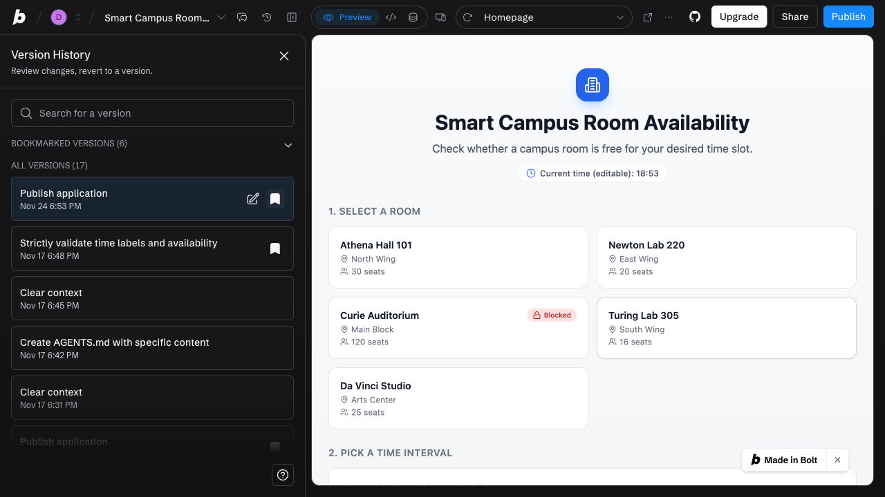
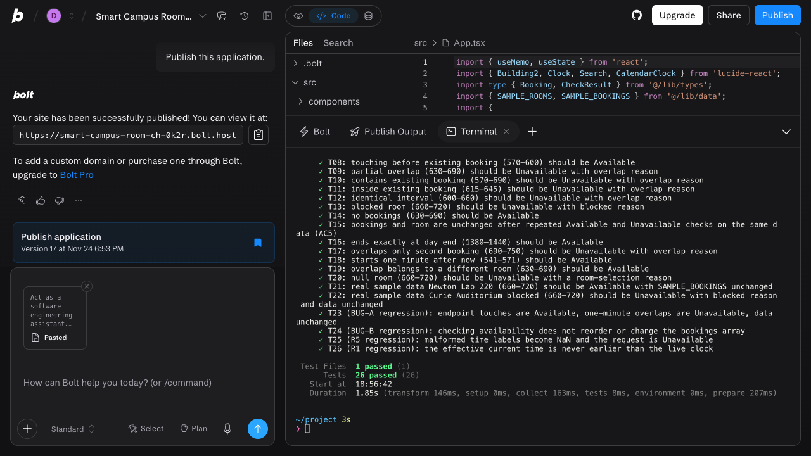
User story. As a student, I want to enter a future start time and a duration for the campus room and see Available or Unavailable with a clear reason, so that I know whether I can use the room, without changing any existing booking.
| ID | Criterion |
|---|---|
| AC1 | Start time must be in the future. |
| AC2 | Duration must be greater than zero and at most 120 minutes. |
| AC3 | Overlapping bookings are unavailable. |
| AC4 | Blocked room is unavailable. |
| AC5 | Display a clear decision without changing existing bookings. |
| AC6 | Invalid input receives understandable feedback. |
| Input | Type | Notes |
|---|---|---|
start | local date-time YYYY-MM-DDTHH:MM | required |
durationMinutes | number | whole minutes; valid range 1–120 |
roomBlocked | boolean | room-status control ("Room blocked" switch), default false |
bookings | list of fictional bookings (below) | read-only |
now | date-time | the real clock in the UI; fixed 2026-11-24T18:00 in automated tests |
| ID | Title | Start | End |
|---|---|---|---|
| B1 | Algorithms lecture | 09:00 | 10:30 |
| B2 | Study group | 12:00 | 13:00 |
| B3 | Robotics club | 15:00 | 16:30 |
| Output | Type | Meaning |
|---|---|---|
available | boolean | true only for AVAILABLE |
reasonCode | string (below) | machine-readable reason |
message | string | the visible message shown to the student |
First failing check decides. End = start + duration; overlap when start < bookingEnd && bookingStart < end, so touching edges are not an overlap. Codes 1–5 are validation errors (AC6), 6–7 Unavailable, 8 Available. The check never writes to the booking list (AC5).
| # | Reason code | Rule | Visible message |
|---|---|---|---|
| 1 | START_REQUIRED | start empty or not a valid date-time (AC6) | Please choose a start date and time. |
| 2 | START_IN_PAST | start ≤ now (AC1) | Start time must be in the future. |
| 3 | DURATION_NOT_NUMBER | duration empty / not a whole number (AC6) | Duration must be a whole number of minutes. |
| 4 | DURATION_NOT_POSITIVE | duration ≤ 0 (AC2) | Duration must be greater than 0 minutes. |
| 5 | DURATION_TOO_LONG | duration > 120 (AC2) | Duration must be at most 120 minutes. |
| 6 | ROOM_BLOCKED | room blocked (AC4) | Unavailable: the room is blocked. |
| 7 | OVERLAP | overlaps a booking (AC3) | Unavailable: overlaps with "<title>" (<HH:MM>–<HH:MM>). |
| 8 | AVAILABLE | none of the above | Available: Room A-101 is free from <HH:MM> to <HH:MM>. |
| Test | start | duration | blocked | Expected available | Expected reason code |
|---|---|---|---|---|---|
| T1 valid free interval | 2026-12-01 17:00 | 60 | no | true | AVAILABLE |
| T2 overlap with existing booking | 2026-12-01 12:30 | 60 | no | false | OVERLAP (Study group) |
| T3 blocked room | 2026-12-01 17:00 | 60 | yes | false | ROOM_BLOCKED |
| T4 duration = 0 | 2026-12-01 17:00 | 0 | no | false | DURATION_NOT_POSITIVE |
| T5 duration = 121 | 2026-12-01 17:00 | 121 | no | false | DURATION_TOO_LONG |
| T6 past start time | 2026-11-20 10:00 | 60 | no | false | START_IN_PAST |
| T7 adjacent non-overlapping | 2026-12-01 13:00 | 120 | no | true | AVAILABLE (13:00–15:00 touches B2 and B3) |
| T8 bookings unchanged | run T1–T7, compare the booking list before/after | – | – | – | list identical (3 bookings, same values) |
Machine-readable copy: contract/test-cases.json. Written 18:06–18:24 (18 min), before either implementation started.
Sent in build mode at 18:57 as a pasted attachment (Bolt turns long pastes into an attachment) with one typed line. Full text: evidence/prompts/P1_implementation_prompt.txt. Beginning:
Act as a software engineering assistant. Implement the Smart Campus availability contract in this Bolt.new project (React + TypeScript + Vitest). Keep all six acceptance criteria unchanged. Use fictional data only. Separate deterministic booking rules from presentation. Explain limitations and provide tests. Do not invent successful test results.
The full contract (user story, AC1-AC6, inputs, outputs, reason codes, messages, fictional data and the common tests T1-T8) is below. Implement exactly this contract:
1. src/lib/contract/data.ts: ROOM_NAME and the three fictional bookings (read-only / frozen).
2. src/lib/contract/validation.ts: pure validateInput(input, now) that returns the first validation error (codes 1-5 in the contract order) or null.
3. src/lib/contract/availability.ts: pure checkContract(input, now, bookings) returning { available, reasonCode, message }; validation first, then ROOM_BLOCKED, then OVERLAP (touching edges are not an overlap), else AVAILABLE. It must never modify the bookings array.
4. src/lib/contract/contract.test.ts: Vitest tests T1-T8 exactly as in the contract table with now = 2026-11-24T18:00 (T8 deep-compares the bookings before and after running T1-T7). Add a few edge tests if useful.
5. UI (presentation only, no rules in components): make the contract checker the main screen. Controls: start (datetime-local), duration in minutes (number), "Room blocked" switch, "Check availability" button. Result card shows Available / Unavailable / Invalid input, the reason code and the visible message from the contract. Show the room's bookings list. Use the real clock as "now". It must be usable on desktop and on a 390 px wide phone screen.
6. Keep the existing src/lib/availability.ts and its 26 tests unchanged so they still pass. Do not add dependencies.
7. Run npm test, npm run lint, npm run typecheck and npm run build, and paste the real terminal output. If something fails, say so.
… followed by the whole contract from section 2.
[Prompt as typed] Implement the attached Practice #12 contract exactly as written (the attachment is the full prompt). [Attachment] = P1_implementation_prompt.txt [Bolt answer, Standard mode, Build (Plan off), Version 18 at Nov 24 6:59 PM] I'll implement the Practice #12 contract: four new files under a contract folder, a rewritten main screen, and the real check runs. First, the package scripts. (files read) All four contract files plus the rewritten main screen are going in now. (actions taken) Now the UI — presentation only, all rules stay in the contract module. (actions taken) All files are in place. Now running the four checks and capturing the real output. (commands executed) Lint found an unused helper — removing it and re-running. (actions taken) The Practice #12 contract is implemented and all four checks pass with real runs. The app's main screen is now the contract checker: a start date-time picker, a duration field (1–120), a "Room blocked" switch, a Check button, and a result card showing the verdict, reason code, and the contract's exact message, plus the room's fictional bookings list. Booking rules live only in the new contract module — the UI just displays results — and the previous availability module and its 26 tests are untouched. Real terminal output: npm test — 2 files, 41 passed (41): availability.test.ts (26), contract.test.ts (15) — includes T1–T8 (T8 deep-compares bookings before/after T1–T7) plus 7 edge tests. npm run lint — clean after one fix: eslint initially flagged an unused helper in the new screen, which I removed; second run passed with no errors. npm run typecheck — no errors. npm run build — succeeded (✓ built in 2.05s). One non-blocking warning: caniuse-lite is outdated (a browser-data table used by the build tool, not a code problem); fixing it would mean updating dependencies, which you excluded, so I left it as is. Limitations: checks use the real clock, so T1/T7-type results depend on when you click (bookings are on 2026-12-01); no booking is ever created or modified; no login or persistence — the three bookings are frozen fictional data.
I downloaded the project, re-ran every check locally (same results as Bolt: 41/41, lint, typecheck, build) and then ran T1–T8 in the running UI (Bolt preview), plus one probe on another date.
| Check | Bolt's claim | Observed | Verdict |
|---|---|---|---|
| npm test | 41 passed | 41 passed (local and Bolt) | confirmed |
| lint / typecheck / build | pass | pass | confirmed |
| UI T2 (overlap) | "result card showing the verdict" | card says "Invalid input" with code OVERLAP | defect D1 |
| Probe 2026-12-05 12:30 + 60 | (not tested by Bolt) | OVERLAP with "Study group" — but that booking is on 12-01 | defect D2: date ignored |
| Result line | — | "Requested: 2026-12-01 13:00, 13:00 onward." (no end time) | defect D3 |
| T8 bookings unchanged | deep-compare test | list identical before/after T1–T7 | confirmed |
Why the 41 green tests missed it: the tests asserted only reason codes, and every case was on 2026-12-01. Green unit tests did not mean a correct running app.
I tested Version 18 in the running app. Unit tests pass, but I found three defects. Fix only these, keep everything else unchanged, no new dependencies: D1 (UI): an OVERLAP result is labelled "Invalid input". The verdict must be: AVAILABLE -> "Available"; ROOM_BLOCKED and OVERLAP -> "Unavailable"; START_REQUIRED, START_IN_PAST and the three DURATION_* codes -> "Invalid input". Move this mapping into a pure function in src/lib/contract so it can be unit-tested, and use it in the UI. D2 (rules): checkContract compares only the time of day and ignores the date. Start 2026-12-05T12:30 for 60 min returns OVERLAP with "Study group", but that booking is on 2026-12-01. Compare full local date-times (date + time) so only real overlaps count; an interval that crosses midnight must also work. D3 (UI): the line "Requested: 2026-12-01 13:00, 13:00 onward." hides the end time. Show "Requested: <date> <start>–<end>". Add regression tests: 2026-12-05T12:30 + 60 -> AVAILABLE; 2026-12-01T23:30 + 60 -> AVAILABLE; 2026-12-01T16:00 + 60 -> OVERLAP (Robotics club); and the verdict mapping for all 8 reason codes. Then run npm test, npm run lint, npm run typecheck, npm run build and paste the real output.
[Prompt] = P1b_fix_prompt.txt (pasted as text) [Bolt answer, Standard mode, Build, Version 19 at Nov 24 7:03 PM] Three fixes: a pure verdict mapping in the contract module, date-aware overlap comparison, and a full requested-range display. Starting with the contract module. (actions taken) Now the UI: use the pure verdict mapping and show the full requested range. (actions taken) Now adding the requested regression tests to the contract test file. (actions taken) All three defects are fixed, with only these changes made. D1: the verdict now comes from a pure, unit-tested function in the contract module: AVAILABLE → "Available"; ROOM_BLOCKED and OVERLAP → "Unavailable"; the five input errors → "Invalid input". An OVERLAP result no longer shows "Invalid input". D2: overlap checking now compares the full date and time, so a slot on 2026-12-05 no longer collides with a 2026-12-01 booking, and intervals crossing midnight (like 23:30 + 60) work correctly. D3: the result card now shows "Requested: 2026-12-01 13:00–14:00" with both start and end instead of only the start. Four regression tests were added (the three date cases plus the full 8-code verdict mapping); the suite went from 41 to 45 tests, all passing. Real terminal output: npm test — Test Files 2 passed (2), Tests 45 passed (45) (availability 26, contract 19). npm run lint — no errors. npm run typecheck — no errors. npm run build — ✓ built in 1.69s (same non-blocking caniuse-lite is outdated data warning as before; updating it would mean touching dependencies, which you excluded).
| Layer | File | Role |
|---|---|---|
| Data | src/lib/contract/data.ts | ROOM_NAME, 3 frozen fictional bookings, CONTRACT_DAY |
| Validation | src/lib/contract/validation.ts | pure validateInput → first error of codes 1–5, contract messages |
| Availability | src/lib/contract/availability.ts | pure checkContract: validation → ROOM_BLOCKED → OVERLAP (date-aware) → AVAILABLE; never mutates bookings |
| Verdict | src/lib/contract/verdict.ts | pure reason-code → "Available / Unavailable / Invalid input" mapping (added by the fix) |
| UI (display only) | src/components/ContractChecker.tsx | datetime-local, duration, "Room blocked" switch, result card, bookings list; responsive (max-w-2xl, stacks on 390 px) |
| Tests | src/lib/contract/contract.test.ts | T1–T8 with fixed now = 2026-11-24T18:00, 7 edge tests, 4 D1/D2 regressions |
import { CONTRACT_DAY, ContractBooking } from './data';
import { ContractInput, ReasonCode, validateInput } from './validation';
export interface ContractResult {
available: boolean;
reasonCode: ReasonCode;
message: string;
}
function toLabel(min: number): string {
const h = String(Math.floor(min / 60)).padStart(2, '0');
const m = String(min % 60).padStart(2, '0');
return `${h}:${m}`;
}
export function minutesFromDayStart(date: Date): number {
return date.getHours() * 60 + date.getMinutes();
}
// All fictional bookings are on CONTRACT_DAY; express them as absolute local
// minutes so comparisons account for both the date and the time of day.
const BOOKING_DAY_START_MIN = new Date(`${CONTRACT_DAY}T00:00`).getTime() / 60000;
// Pure: validation first, then ROOM_BLOCKED, then OVERLAP (touching edges are
// not an overlap), else AVAILABLE. Never modifies the bookings array.
export function checkContract(
input: ContractInput,
now: Date,
bookings: readonly ContractBooking[]
): ContractResult {
const error = validateInput(input, now);
if (error) {
return { available: false, reasonCode: error.code, message: error.message };
}
if (input.roomBlocked) {
return {
available: false,
reasonCode: 'ROOM_BLOCKED',
message: 'Unavailable: the room is blocked.',
};
}
const startMin = new Date(input.start).getTime() / 60000;
const endMin = startMin + input.durationMinutes;
const conflict = bookings.find((b) => {
const bStart = BOOKING_DAY_START_MIN + b.start;
const bEnd = BOOKING_DAY_START_MIN + b.end;
return startMin < bEnd && bStart < endMin;
});
if (conflict) {
return {
available: false,
reasonCode: 'OVERLAP',
message: `Unavailable: overlaps with "${conflict.title}" (${toLabel(conflict.start)}–${toLabel(conflict.end)}).`,
};
}
const startOfDay = minutesFromDayStart(new Date(input.start));
return {
available: true,
reasonCode: 'AVAILABLE',
message: `Available: Room A-101 is free from ${toLabel(startOfDay)} to ${toLabel(startOfDay + input.durationMinutes)}.`,
};
}
✓ Practice #12 contract (common tests T1-T8) > T1 valid free interval -> AVAILABLE ✓ Practice #12 contract (common tests T1-T8) > T2 overlap with existing booking -> OVERLAP ✓ Practice #12 contract (common tests T1-T8) > T3 blocked room -> ROOM_BLOCKED ✓ Practice #12 contract (common tests T1-T8) > T4 duration = 0 -> DURATION_NOT_POSITIVE ✓ Practice #12 contract (common tests T1-T8) > T5 duration = 121 -> DURATION_TOO_LONG ✓ Practice #12 contract (common tests T1-T8) > T6 past start time -> START_IN_PAST ✓ Practice #12 contract (common tests T1-T8) > T7 adjacent non-overlapping (13:00-15:00 touches B2 and B3) -> AVAILABLE ✓ Practice #12 contract (common tests T1-T8) > T8 bookings unchanged ✓ Practice #12 contract (extra edge tests) > empty start -> START_REQUIRED ✓ Practice #12 contract (extra edge tests) > malformed start -> START_REQUIRED ✓ Practice #12 contract (extra edge tests) > non-integer duration -> DURATION_NOT_NUMBER ✓ Practice #12 contract (extra edge tests) > validation errors take precedence over blocked room ✓ Practice #12 contract (extra edge tests) > negative duration -> DURATION_NOT_POSITIVE ✓ Practice #12 contract (extra edge tests) > start exactly equal to now -> START_IN_PAST ✓ Practice #12 contract (extra edge tests) > room name is the fictional one ✓ Practice #12 contract (D1-D3 regression tests) > D2: a slot on a different date never overlaps (2026-12-05T12:30 + 60 -> AVAILABLE) ✓ Practice #12 contract (D1-D3 regression tests) > D2: an interval crossing midnight is free when no booking spans it (2026-12-01T23:30 + 60 -> AVAILABLE) ✓ Practice #12 contract (D1-D3 regression tests) > D2: a real overlap on the booking day still counts (2026-12-01T16:00 + 60 -> OVERLAP, Robotics club) ✓ Practice #12 contract (D1-D3 regression tests) > D1: verdict mapping for all 8 reason codes
### npm run test
✓ src/lib/availability.test.ts (26 tests) 16ms
✓ src/lib/contract/contract.test.ts (19 tests) 12ms
Test Files 2 passed (2)
Tests 45 passed (45)
### npm run lint
### npm run typecheck
### npm run build
✓ built in 1.44s
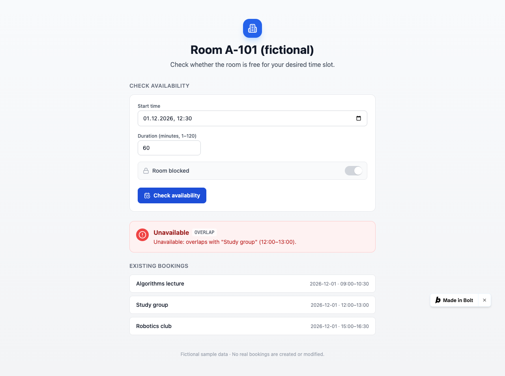
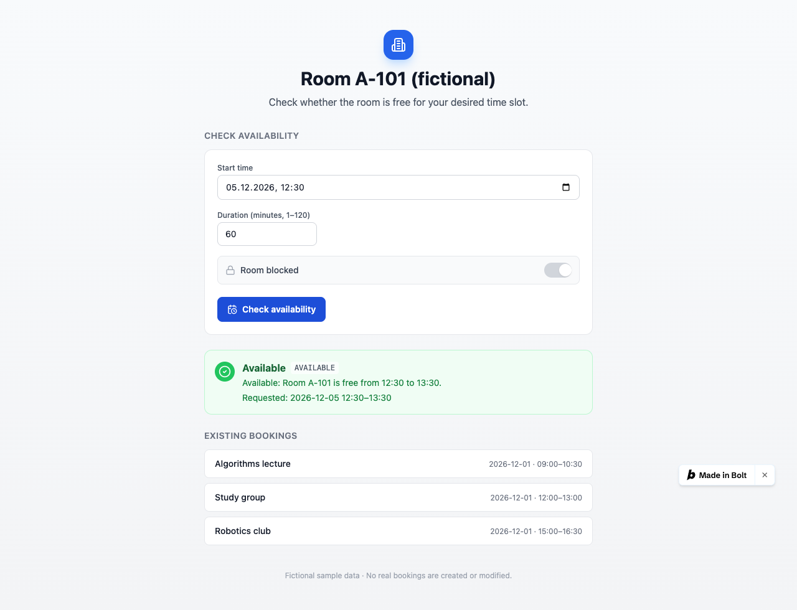
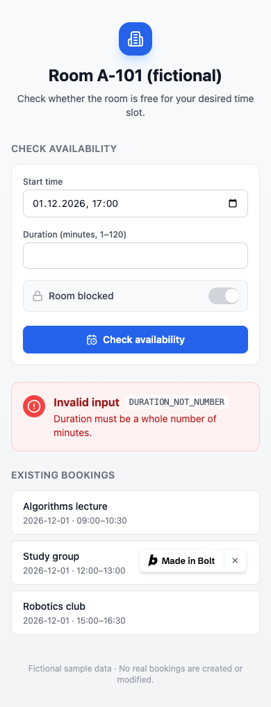
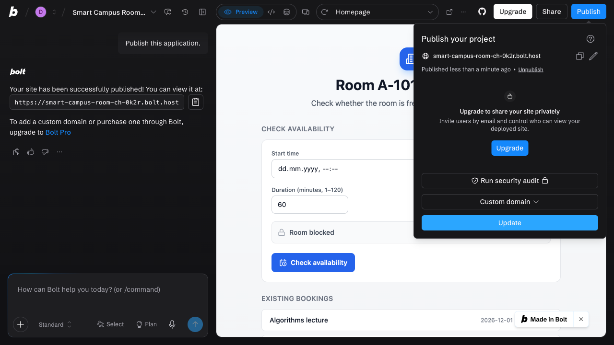
Open defect R1 (minor): for 2026-12-01 23:30 + 60 the message says "free from 23:30 to 24:30" while the "Requested" line correctly says 23:30–00:30. The decision (Available) is correct; only the label does not wrap past midnight. Left open on purpose and counted as unresolved.
Platform choice. Budibase was on the course list and its Community edition is free to self-host (the Budibase Cloud plan starts at $299/month, so it was not used — no subscriptions bought). It runs as one Docker container (budibase/budibase:latest, v4.1.0) on my laptop, bound to 127.0.0.1; the admin account is a local fictional one (student@example.com).
{{ State.result }} ▸ Table of bookings with Add / Edit / Delete rows and row selection switched off.result) whose value is one JavaScript binding — the only script in the app ("small scripts only when necessary": the platform has no visual way to express "first failing rule wins" with overlap on dates).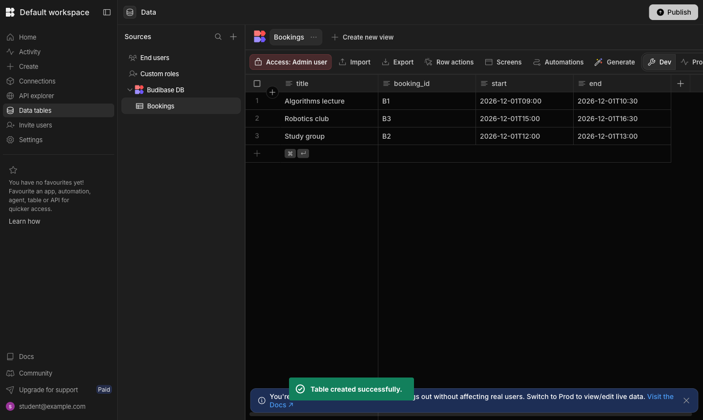
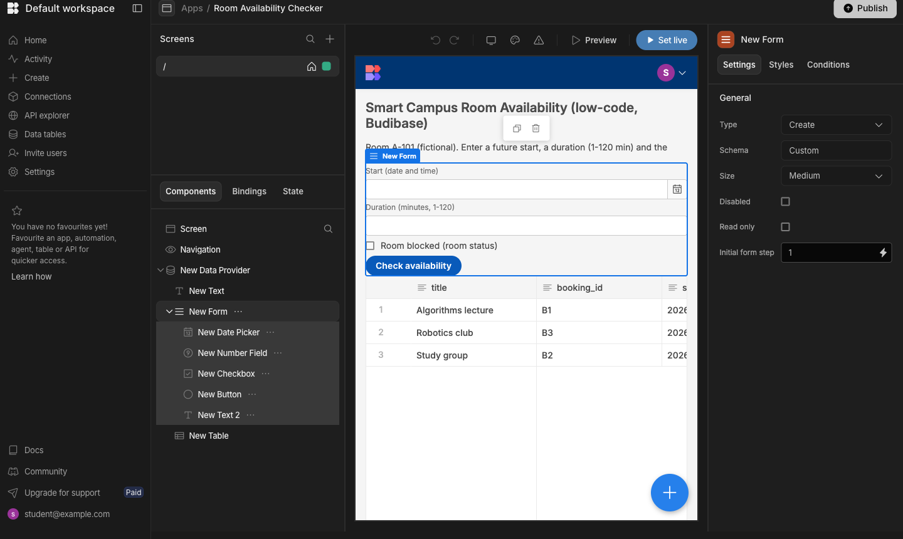
// Budibase JS binding used by the "Check availability" button
// (On click -> Update State, key "result"). This is the only script in the
// low-code app; inputs, data, table and layout are configured visually.
const pad = (n) => String(n).padStart(2, "0");
// v2 (security fix): escape data from the table before it reaches the Markdown/HTML text component
const esc = (t) => String(t).replace(/&/g, "&").replace(/</g, "<").replace(/>/g, ">").replace(/"/g, """);
const hm = (d) => pad(d.getHours()) + ":" + pad(d.getMinutes());
const out = (available, code, message) => {
const decision = available ? "Available" : (code === "ROOM_BLOCKED" || code === "OVERLAP" ? "Unavailable" : "Invalid input");
return "**" + decision + "** | available = " + available + " | reason code = " + code + "\n\n" + message;
};
const rawStart = $("[New Form].Fields.start");
const rawDuration = $("[New Form].Fields.duration");
const blocked = $("[New Form].Fields.blocked") === true;
const rows = $("[New Data Provider].Rows") || [];
const now = new Date();
const start = rawStart ? new Date(rawStart) : null;
if (!start || isNaN(start.getTime())) return out(false, "START_REQUIRED", "Please choose a start date and time.");
if (start <= now) return out(false, "START_IN_PAST", "Start time must be in the future.");
if (rawDuration === undefined || rawDuration === null || rawDuration === "" || !Number.isInteger(Number(rawDuration)))
return out(false, "DURATION_NOT_NUMBER", "Duration must be a whole number of minutes.");
const duration = Number(rawDuration);
if (duration <= 0) return out(false, "DURATION_NOT_POSITIVE", "Duration must be greater than 0 minutes.");
if (duration > 120) return out(false, "DURATION_TOO_LONG", "Duration must be at most 120 minutes.");
if (blocked) return out(false, "ROOM_BLOCKED", "Unavailable: the room is blocked.");
const end = new Date(start.getTime() + duration * 60000);
const hit = rows.find((r) => start < new Date(r.end) && new Date(r.start) < end);
if (hit) return out(false, "OVERLAP", 'Unavailable: overlaps with "' + esc(hit.title) + '" (' + hm(new Date(hit.start)) + "–" + hm(new Date(hit.end)) + ").");
return out(true, "AVAILABLE", "Available: Room A-101 is free from " + hm(start) + " to " + hm(end) + ".");
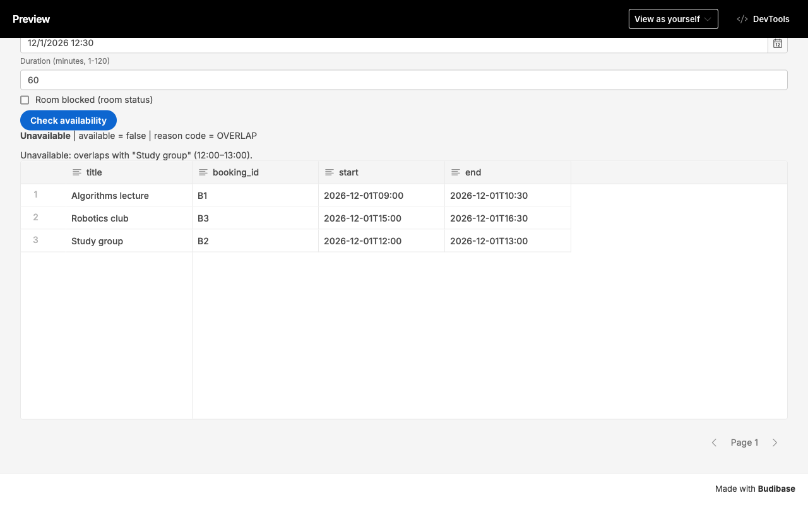
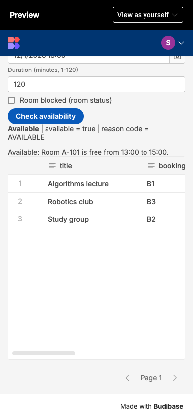
Same inputs in both apps, typed into the running UI (code: Bolt preview; low-code: Budibase dev preview), real clock as "now" (24 Nov 2026, evening). To keep the runs identical and repeatable, the inputs were entered by a scripted browser (Playwright) and a screenshot was saved for every case. The code-based T1–T8 were also run as unit tests (fixed now) and repeated on the live site.
| Test | Input | Expected | Code-based V18 (first AI version) | Code-based V19 (final) | Low-code (Budibase) |
|---|---|---|---|---|---|
| T1 | 2026-12-01 17:00, 60, not blocked | Available · AVAILABLE | Available | AVAILABLE | Available: Room A-101 is free from 17:00 to 18:00. PASS | Available | AVAILABLE | Available: Room A-101 is free from 17:00 to 18:00. | Requested: 2026-12-01 17:00–18:00 PASS | Available | available = true | reason code = AVAILABLE — Available: Room A-101 is free from 17:00 to 18:00. PASS |
| T2 | 2026-12-01 12:30, 60 | Unavailable · OVERLAP (Study group) | Invalid input | OVERLAP | Unavailable: overlaps with "Study group" (12:00–13:00). FAIL | Unavailable | OVERLAP | Unavailable: overlaps with "Study group" (12:00–13:00). PASS | Unavailable | available = false | reason code = OVERLAP — Unavailable: overlaps with "Study group" (12:00–13:00). PASS |
| T3 | 2026-12-01 17:00, 60, blocked | Unavailable · ROOM_BLOCKED | Unavailable | ROOM_BLOCKED | Unavailable: the room is blocked. PASS | Unavailable | ROOM_BLOCKED | Unavailable: the room is blocked. PASS | Unavailable | available = false | reason code = ROOM_BLOCKED — Unavailable: the room is blocked. PASS |
| T4 | 2026-12-01 17:00, 0 | validation error · DURATION_NOT_POSITIVE | Invalid input | DURATION_NOT_POSITIVE | Duration must be greater than 0 minutes. PASS | Invalid input | DURATION_NOT_POSITIVE | Duration must be greater than 0 minutes. PASS | Invalid input | available = false | reason code = DURATION_NOT_POSITIVE — Duration must be greater than 0 minutes. PASS |
| T5 | 2026-12-01 17:00, 121 | validation error · DURATION_TOO_LONG | Invalid input | DURATION_TOO_LONG | Duration must be at most 120 minutes. PASS | Invalid input | DURATION_TOO_LONG | Duration must be at most 120 minutes. PASS | Invalid input | available = false | reason code = DURATION_TOO_LONG — Duration must be at most 120 minutes. PASS |
| T6 | 2026-11-20 10:00, 60 | validation error · START_IN_PAST | Invalid input | START_IN_PAST | Start time must be in the future. PASS | Invalid input | START_IN_PAST | Start time must be in the future. PASS | Invalid input | available = false | reason code = START_IN_PAST — Start time must be in the future. PASS |
| T7 | 2026-12-01 13:00, 120 | Available · AVAILABLE (13:00–15:00) | Available | AVAILABLE | Available: Room A-101 is free from 13:00 to 15:00. PASS | Available | AVAILABLE | Available: Room A-101 is free from 13:00 to 15:00. | Requested: 2026-12-01 13:00–15:00 PASS | Available | available = true | reason code = AVAILABLE — Available: Room A-101 is free from 13:00 to 15:00. PASS |
| T8 | run T1–T7, compare bookings | bookings unchanged | Existing bookings list identical before/after T1-T7 PASS | Existing bookings list identical before/after T1-T7 PASS | Bookings table text identical before T1 and after T7 (B1 09:00-10:30, B2 12:00-13:00, B3 15:00-16:30) PASS |
| Score | 7 / 8 | 8 / 8 | 8 / 8 | ||
| Check | Code-based | Low-code |
|---|---|---|
| Empty duration (AC6) | Invalid input · DURATION_NOT_NUMBER | Invalid input · DURATION_NOT_NUMBER |
| Other date 2026-12-05 12:30 + 60 | V18 OVERLAP (wrong) → V19 Available | Available (binding compares full date-times) |
| T1–T8 on the deployed version | 8/8 on the live bolt.host site | published app: T2 "Available" (empty prod table) → after "Seed from Dev" 8/8 |
| Unit tests | 45/45 (Vitest) | not possible (no test runner for bindings) |
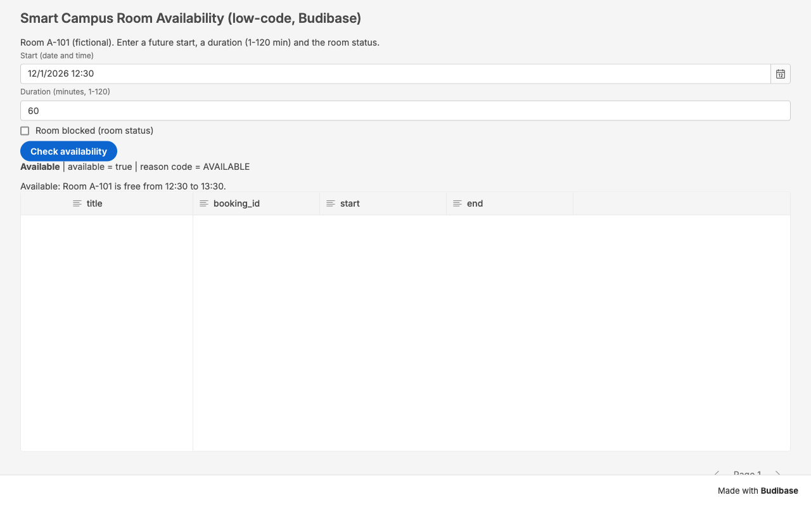
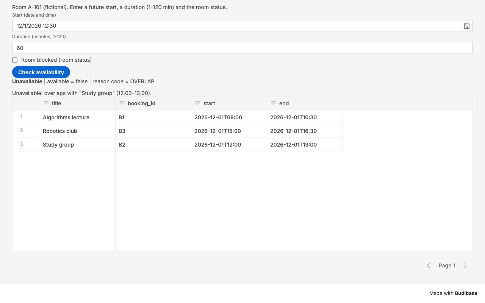
evidence/timelog.txt, minutes)| Phase | Code-based (Bolt) | Low-code (Budibase) |
|---|---|---|
| Setup | 2 — open project, bookmark V17, run baseline tests (project already existed from earlier practices) | 3 — start container, create local admin (image download failed ~20 min on network and was retried in the background; not counted) |
| Implementation | 3 — prompt sent 18:57, Bolt done 18:59/19:00 | 9 — table, screen, form, binding, table component (18:29–18:38) |
| Debugging / repair | 2 — fix prompt for D1–D3 (19:02–19:03) | 6 — layout Grid→Flex (≈1.5), XSS escape fix incl. one failed save in a nested dialog (3.5), empty prod data (1) |
| Testing | 5 — V18 UI run, V19 verification, live-site run | 5 — first T1–T8, security probes, two re-runs (preview + published) |
| Total | ≈ 12 | ≈ 23 |
| Shared, not counted | contract + common tests 18 min (18:06–18:24); report writing | |
| Successful acceptance tests (final) | 8 / 8 (first version 7 / 8) | 8 / 8 (published version first 7 / 8) |
| Defects found / fixed / unresolved | 4 found (D1, D2, D3, R1) / 3 fixed / 1 unresolved (R1, minor label) | 3 found (layout, HTML injection, empty prod data) / 3 fixed / 0 unresolved functional (open risks in section 7) |
| AI prompts used | 2 build + 1 read-only (Bolt Free: 14K daily tokens left) | 0 (Budibase "Generate with AI" / "Switch on AI" not used) |
There was a ~2 h pause in the session between 19:03 and 21:05 (no work); it is excluded. Low-code building was done with scripted browser steps, so a person clicking by hand would most likely need longer — that is an impression, not a measurement.
| Code-based (Bolt) | Low-code (Budibase Community) | |
|---|---|---|
| Review | Every AI change is a new Bolt version; I downloaded V18/V19 and read a plain-text diff (evidence/code/diffs/v18_to_v19.diff, 4 files, +77/−18) | Changes are saved live in the builder (undo/redo only). The logic is stored base64-encoded inside the app definition, so a diff of two exports is not readable without decoding |
| Export | Project → Download (zip of a normal Vite + React project; runs with npm ci && npm test) | Settings → Export workspace (tar.gz with db.txt + client JS, 1.9 MB); restorable only into Budibase; warning that exports can contain datasource credentials (checked: none here) |
| Version control | Bolt version history with bookmarks (V17 baseline, V18, V19); the code can go to Git/GitHub (this repository) | No Git integration; Backups = Premium, Audit logs = Enterprise; Dev and Prod data are separate |
Scope: only my own artefacts — the Bolt project / my bolt.host site and the Budibase instance on my laptop. No third-party service was scanned. Runtime (DAST) checks were single manual requests and UI inputs against my own data, no fuzzing or load.
| # | Check | Code-based (Bolt.new, React/TS) | Low-code (Budibase 4.1.0, self-hosted) |
|---|---|---|---|
| 1 | Input validation | Pure validateInput before any rule; covered by Vitest T4–T6 + edge tests | Number / date-picker controls + checks in the one JS binding; T4–T6 + empty duration pass |
| 2 | Output handling / XSS (SAST + DAST) | No dangerouslySetInnerHTML / innerHTML / eval in src (grep); React escapes text | Found: booking title reached the Markdown Text component as HTML (<img> rendered; onerror stripped by the sanitizer, no script ran). Fixed by escaping in the binding; re-test shows the tags as text. The Table component always showed the title as text |
| 3 | Injection (SQL/NoSQL) | No database, no queries | Rows read through the platform Data Provider; no custom query or query string built from input |
| 4 | Authentication / access | Public static site, no login, nothing to protect (fictional data) | App requires a Budibase login; anonymous row read → 302/401, anonymous write → 302; screen role "Basic user", table access "Admin user" |
| 5 | Hidden UI ≠ permission | n/a | Table component has Add/Edit/Delete off, but an admin session could still POST/DELETE rows through the API → real protection = table/role permissions |
| 6 | Public sharing / hosting | Bolt Publish site is public by design (bolt.host); project shared as Viewer link | Bound to 127.0.0.1 only (LAN IP refused); not exposed to the internet |
| 7 | Secrets | No .env, no keys, no network calls in src | Platform secrets in low-code/budibase/.env (chmod 600, git-ignored); none in the app or its export (checked) ; export warning: may contain datasource credentials — this app has none |
| 8 | Connectors / third-party | None | No external datasource; image bundles nginx, CouchDB, Redis, MinIO, Postgres + LiteLLM (AI proxy, unused) → larger attack surface |
| 9 | SCA / updates | npm audit: 0 production, 24 dev-tool vulnerabilities (2 low, 7 moderate, 13 high, 2 critical) — I own upgrades | Platform image budibase/budibase:latest (v4.1.0, built 2026-11-19); I own pulling updates; Docker Scout needs a Docker login, so no image CVE scan was run |
| 10 | Data environments | Single bundle | Found: Dev and Prod rows are separate → published app had 0 bookings and answered T2 "Available" (fail-open). Fixed with "Seed from Dev"; T1–T8 8/8 on the published app |
| 11 | Trust in "now" | Client clock (both) — a user can change the device clock to bypass AC1; acceptable for a fictional checker, a real system must check on the server | same |
| 12 | AI-agent least privilege | Bolt agent can edit every file and publish; I reviewed each diff and ran tests before publishing | Budibase AI features not enabled ("Switch on AI" left off) |
# Code-based (V16 baseline) static checks — 2026-11-24 18:49 ## Raw-HTML / eval sinks in src (XSS/injection SAST grep) none found ## Secrets / env usage in src none found no .env files ## Network calls (fetch/axios/supabase) none found ## npm audit (production deps) found 0 vulnerabilities ## npm audit (all deps) To address issues that do not require attention, run: npm audit fix To address all issues (including breaking changes), run: npm audit fix --force ## lint / typecheck lint exit 0 typecheck exit 0 ## npm audit summary (all deps): 24 vulnerabilities (2 low, 7 moderate, 13 high, 2 critical) — all in dev/build tooling (vite/vitest/eslint chain); production deps: 0.
# Safe runtime checks against the LOCAL Budibase instance only (2026-11-24 18:41) ## 1. Is the service reachable only from this machine? 80/tcp -> 127.0.0.1:10000 LAN IP: 10.212.1.152 curl http://10.212.1.152:10000/builder -> 000 (000 = connection refused) ## 2. Read rows WITHOUT a session (anonymous) GET/POST /api/ta_3c7f5472e2924beaae0aac26383b52c3/rows Redirecting to /. GET/POST /api/public/v1/tables/ta_3c7f5472e2924beaae0aac26383b52c3/rows/search Redirecting to /. Redirecting to /. ## 3. Write rows WITHOUT a session Redirecting to /. ## Status codes (anonymous) GET /api/ta_3c7f5472e2924beaae0aac26383b52c3/rows -> 302 location=http://127.0.0.1:10000/ POST /api/ta_3c7f5472e2924beaae0aac26383b52c3/rows (write) -> 302 location=http://127.0.0.1:10000/ Result: no row data returned and no write accepted without a session (redirect to login). ## 4. Output handling / XSS (stored value -> Text component with Markdown) Temporary row added through the API with an admin session (booking_id XSS-TEST, 2026-12-02 09:00-10:00, title = <img src=x onerror="window.__xss=1"><b>bold</b>), then a check for 2026-12-02 09:30 / 60 min. Observed result paragraph HTML: <p>Unavailable: overlaps with "<img src="x">bold" (09:00–10:00).</p> - onerror handler removed by Budibase's sanitizer, window.__xss stayed undefined, no dialog -> no script execution. - BUT the <img> tag itself was rendered -> HTML injection is possible (e.g. an external image / tracking pixel or misleading markup) whenever a booking title contains HTML. Severity: low-medium. Fix: escape the title in the binding. Note: the API accepted a row write from the logged-in admin session even though the screen's table has Add/Edit/Delete rows switched off -> hiding UI controls is not an access control; table permissions are. Cleanup: XSS-TEST row deleted (HTTP 200); table back to B1, B2, B3 with the original values. ## 5. After the fix (binding v2 escapes the title) Same temporary row, same check: <p>Unavailable: overlaps with "<img src=x onerror="window.__xss=1"><b>bold</b>" (09:00–10:00).</p> -> shown as text, no element injected, window.__xss undefined. Row deleted again (HTTP 200); table = B1, B2, B3. Regression after the fix: T1-T8 8/8 pass + extra AC6 check (empty duration -> DURATION_NOT_NUMBER). ## 6. Published (prod) app Defect found: after Publish, the prod Bookings table was EMPTY (Budibase keeps Dev and Prod rows apart). T2 on the published app returned 'Available ... AVAILABLE' (wrong, fails open). Fixed with Data tables -> Prod -> 'Seed from Dev'; T1-T8 then 8/8 on the published app. Anonymous GET of the published app page: 200 -> Anonymous row read on prod app id: 401 ->
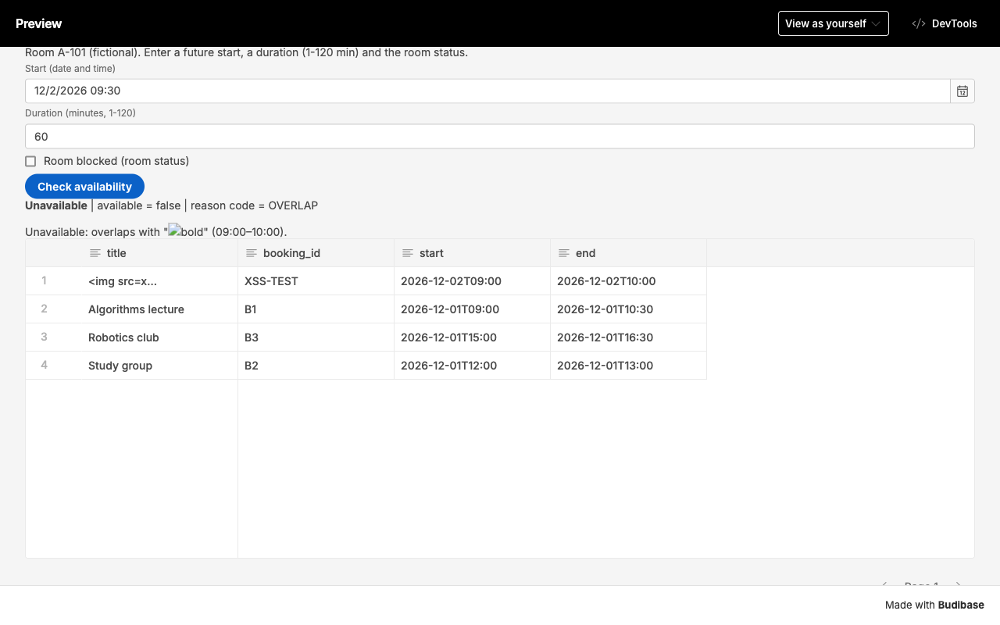
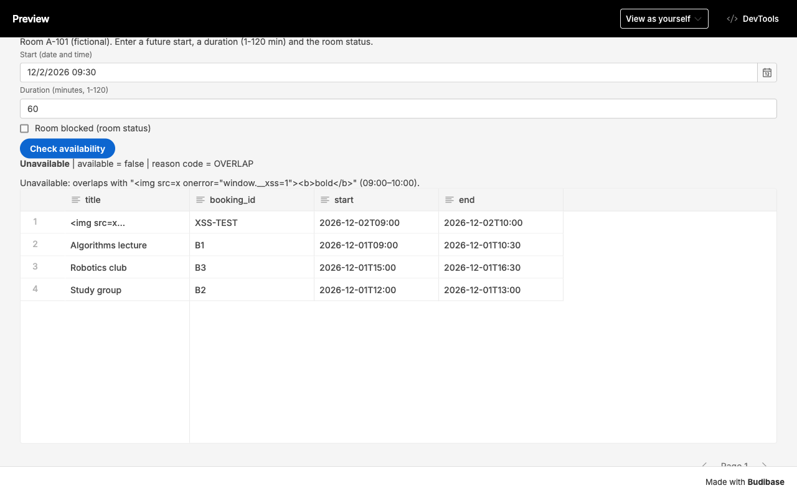
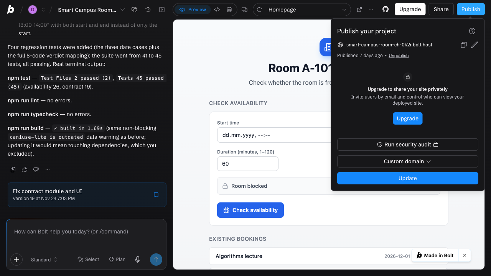
| Criterion | Code-based (Bolt.new, React/TS) | Low-code (Budibase Community) |
|---|---|---|
| Functional tests | 8 / 8 (V19 preview + live; first AI version 7 / 8) · unit 45 / 45 | 8 / 8 (dev preview first run; published app 7 / 8 until prod data was seeded) |
| Build and repair time | ≈ 12 min (setup 2, implementation 3, repair 2, testing 5) | ≈ 23 min (setup 3, implementation 9, repair 6, testing 5) |
| Customization | Full: any rule, message, layout; responsive card UI; reason-code badge | Fixed component set; rules needed a JS binding anyway; Grid layout clipped content until switched to Flex; bookings table scrolls sideways on a phone |
| Security controls | Static site, no backend / secrets / user data; React escapes text; no raw-HTML sinks (grep); 0 production vulnerabilities, 24 dev-tool; site is public by design; Bolt security audit locked on Free | Login + roles; anonymous API read 401/302, write refused; 127.0.0.1 only. Found: HTML injection via Markdown text (fixed), admin session can write rows through the API although the UI hides it, fail-open on empty prod data (fixed). Platform bundles 6+ services that I must patch |
| Versioning / portability | Bolt versions + readable diffs; standard Vite project, runs anywhere (npm ci && npm test), static hosting | No Git; export tar.gz only restorable into Budibase; logic base64-encoded; backups Premium, audit logs Enterprise; Dev/Prod data split must be managed |
| Ongoing cost | $0: Bolt Free (token-limited: 3 prompts left 14K daily tokens) + free bolt.host; Pro needed for private sharing / security audit | $0 licence (Community self-host) but I run and update a 1.2 GB Docker image with nginx, CouchDB, Redis, MinIO, Postgres, LiteLLM; Budibase Cloud from $299 / month |
The decision is defended with the observed evidence above; Bolt's own comparison (section 9) reached the same recommendation, but I checked its claims separately.
Prompt: evidence/prompts/P2_comparison_prompt.txt (the suggested prompt + a description of the Budibase app + my measured evidence). Bolt's full answer:
[Prompt] = P2_comparison_prompt.txt (attachment) + "Compare the two implementations as described in the attached prompt (read-only review)." [Bolt answer, Standard mode, Plan ON (no files changed), 24 Nov ~21:08-21:10] I have everything needed: the contract source, the review checklist, and both implementations' evidence. Here is the comparison. 1. Comparison per criterion Correctness — code-based edges ahead, but neither is clean. Code-based: 45/45 unit tests, UI 8/8 in preview and live after v19, lint/typecheck/build pass. But two defects were caught only by manual UI testing (OVERLAP mislabelled, date-blind overlap), and one remains: "free from 23:30 to 24:30" — 24:30 is not a valid clock label. Evidence: v19 test logs plus your UI checks; the unit suite passes despite this defect because no test asserts that message. Low-code: T1–T8 8/8 on the first run in dev — genuinely faster to a correct dev preview. But the published app initially answered T2 "Available" on an empty table — a fail-open correctness failure caused by the deployment process, not the logic. Evidence: your post-publish test of T2. The pattern: the code-based failure modes were in the UI layer and were caught by tests plus one fix cycle; the low-code failure mode was environmental and silently produced a wrong answer with all previews green. Maintainability — code-based clearly ahead. Code-based: pure functions separated from presentation, 45 versioned tests that rerun in under a second, and any editor/diff tooling works on plain source. Evidence: the files in src/lib/contract/ and the test run times in your log. Low-code: the core logic is a ~25-line JavaScript binding stored base64-encoded inside the app definition, edited live in the builder with no version history. Evidence: your description — the only way to review or diff that logic is to decode it out of a tar.gz export. The base64 encoding actively hides logic from review, and there is no way to answer "what changed since last week." Portability — code-based ahead. Code-based: the artefact is standard source plus a static build; it runs on any static host (you already publish it). Evidence: the dist/ output and live site re-test in your log. Low-code: the only portable artefact is a workspace export (tar.gz) tied to Budibase Community 4.1.0. That is backup-grade, not migration-grade — restoring requires a compatible Budibase version. Evidence: your own framing; a test worth running is listed under risks below. Cost — the measurements contradict the label. Your wall-clock totals: low-code ≈ 23 min (2 setup + 10 build + 4 tests + 4 security fix + 3 publish fix), code-based ≈ 11.5 min (1.5 + 5 verify + 1 fix + 3 verify + 2 publish). Even excluding the failed image pulls, the low-code path cost roughly twice as much to reach the same verified state. Ongoing cost also differs: the Budibase stack runs six services (nginx, CouchDB, Redis, MinIO, Postgres, LiteLLM) that need updates and backups; the code-based app is static files with no server. Evidence: your component list; npm audit 0 production vulnerabilities. Security — different shapes of risk; low-code is not secure by default. Code-based: a static SPA with no backend, no secrets, and no user data; booking titles are build-time constants, so there is no injection sink reachable by an attacker (React escapes ordinary interpolation; I checked the screen — no escape hatches like dangerouslySetInnerHTML). Evidence: source review of ContractChecker.tsx; npm audit 0 production issues. The 24 dev-tool vulnerabilities affect the build pipeline, not the deployed page. Low-code: two demonstrated weaknesses. First, the Markdown component rendered a stored <img> tag as HTML — the title is attacker-controllable if anyone but you maintains bookings, and the fix (escaping inside one binding) covers only the path you re-tested. Second, UI-level hiding of add/edit/delete did not stop an admin session from writing via the API — the interface constrains the user, the API did not. Binding to 127.0.0.1 limits exposure to people with host access; it is a network control, not an authorization control. Evidence: your injection test and admin POST/DELETE results. 2. Unsupported assumptions in the evidence "8/8 on the first run" for low-code applies to dev preview only; the published app failed T2 until seeded. The evidence does not show a first-run pass in production. The npm audit counts are not exploitability assessments — 24 dev vulnerabilities are unexamined, and 0 production issues assumes the audit tool's reachability model. The low-code time log excludes cold-start cost: the first image pull failed several times, so the ~2 min setup assumes a warm cache. The escaping fix is assumed to cover all render paths for booking titles; only the Markdown component path was re-tested. "Anonymous API refused" was tested for one role; whether any non-admin authenticated role exists, and what it can do, was not tested. UI 8/8 for the code-based app was measured in one browser/timezone; the date logic parses datetime-local as local time, so cross-timezone behaviour is asserted, not observed. 45/45 unit tests is treated as defect-free; it demonstrably is not (the 24:30 message defect passes the suite). 3. Risk list with required observable evidence Fail-open on empty data (low-code, high). Empty prod table → "Available". To verify: on any fresh deployment, clear the table and re-run T2; a correct implementation must fail closed (error or OVERLAP, never AVAILABLE). Also test with the backend stopped. API writes bypass UI restrictions (low-code, high if multi-user). Admin session wrote/deleted rows despite hidden controls. To verify: create a least-privilege user, obtain its session token, attempt POST/DELETE on the Bookings API directly; confirm 403 at the server, not just a missing button. Injection class only partially fixed (low-code, medium). <img> rendered by Markdown; onerror stripped by sanitizer; fix applied in one binding. To verify: store <img src=x onerror=alert(1)> and <a href="javascript:alert(1)"> as a title, render through every component that displays titles (table, detail, markdown), and inspect the DOM for injected elements and any execution. Unversioned, opaque logic edits (low-code, medium). No git; binding base64-encoded. To verify: make a small logic edit, export the workspace, and attempt to produce a readable diff against the previous export; then restore that export on a clean instance and re-run T1–T8. Invalid end-time label (code-based, low). 23:30 + 60 shows "to 24:30". To verify: run that input in the UI and observe the message; add a unit assertion for the end label. Local-timezone dependence (both, low–medium). Code-based parses the picker value as local time; Budibase picker is set to "ignore time zones". To verify: run each app with the browser (or host) timezone set to two zones at least 6 hours apart, run T2 and T7, and compare the rendered times and results. Dev-dependency vulnerabilities (code-based, low). 24 audit findings in build tooling. To verify: read npm audit output and confirm none of the affected packages ship in dist/ (check the bundle or source maps); re-run after any dependency update. Deployment drift between dev and prod (low-code, medium). Data separation caused the fail-open incident. To verify: change a booking in dev, publish, and confirm the published app reflects the definition change but not unsynced data — and document the seeding step as mandatory. 4. Recommendation For this scenario — one fictional room, read-only checks, no real data, no login — the code-based implementation is the one to keep. It reached the same verified correctness in about half the measured time, its logic is reviewable, diffable, and covered by 45 rerunnable tests, and its deployed footprint is a static page with no server to attack. The low-code implementation is a legitimate fast prototype, but its evidence shows the characteristic low-code risks in miniature: a fail-open production deployment, an authenticated write path the UI does not show, unversioned opaque logic, and a six-service stack to maintain. If it is retained for comparison, apply the two mandatory controls before trusting it: fail-closed behaviour on missing data and server-side role permissions on the API. Summary: I reviewed both implementations against the same contract using your test evidence and a source review of the contract code (read-only, nothing changed). The code-based app wins on correctness assurance, maintainability, portability, and measured cost; the low-code app was faster to a dev-preview pass but its real failures were deployment and authorization gaps. The highest-priority items to verify next are the fail-open-on-empty-data behaviour and the authenticated API write path on the Budibase side, plus the 24:30 label defect on the code-based side.
| Bolt claim | My check | Verdict |
|---|---|---|
| "Implemented exactly", 41/41, lint/typecheck/build pass (P1) | Re-ran locally: identical numbers | confirmed |
| "Result card showing the verdict" (P1) | UI T2 showed "Invalid input" for OVERLAP; date ignored | incomplete — 2 defects |
| "All three defects are fixed", 45/45 (P1b) | Re-ran locally + UI 8/8 + probes; midnight label still "24:30" | confirmed |
| "no escape hatches like dangerouslySetInnerHTML" (P2) | grep over src: none | confirmed |
| Budibase logic "edited live … with no version history" (P2) | Backups = Premium, Audit logs = Enterprise, no Git; builder has only undo/redo | confirmed for the free edition |
| "Injection fix covers only the path you re-tested" (P2) | XSS screenshot shows the Table component renders the same title as text → only the Markdown text was affected | partly verified (Table safe, other components not tested) |
| "half the measured time" (P2) | Numbers are mine, but the code-based side reused a project built over six practices and Bolt did the typing; not a like-for-like comparison | plausible, with a bias |
| Fail-open on empty data / API writes / timezone dependence (P2 risks) | First two observed by me; timezone not tested (one browser, Asia/Almaty) | 2 confirmed, 1 unverified |
.env).127.0.0.1:10000); there is no public link. The submission therefore includes the Budibase export and screenshots instead of a live URL.2026-11-24 18:05:59 START practice12 setup 2026-11-24 18:24:25 CONTRACT written (contract/CONTRACT.md, test-cases.json) 2026-11-24 18:26:29 LOWCODE setup start: docker run budibase (image already pulled) 2026-11-24 18:28:11 LOWCODE Budibase up at http://127.0.0.1:10000 2026-11-24 18:37:56 LOWCODE first build complete (table, screen, form, JS binding, table) -> start testing 2026-11-24 18:41:33 LOWCODE tests T1-T8 run: 8/8 pass (first run, no debugging needed; ~5 min fixing layout Grid->Flex before tests) 2026-11-24 18:42:43 LOWCODE security: HTML-injection found in result text; starting repair (escape title) 2026-11-24 18:46:15 LOWCODE repair done (escape fix saved after 1 failed save attempt in nested drawer), XSS re-check OK, regression T1-T8 8/8 2026-11-24 18:48:51 LOWCODE DEFECT: published (prod) app has empty Bookings (dev/prod data separated) -> T2 returns AVAILABLE (wrong). Repair: import CSV into Prod table 2026-11-24 18:49:46 LOWCODE prod data seeded from Dev; published app T1-T8 8/8; export saved 2026-11-24 18:54:58 CODE track start: Bolt signed in (user did Google login) 2026-11-24 18:57:07 CODE baseline frozen in Bolt (V17 bookmarked, npm test 26/26) 2026-11-24 18:57:13 CODE P1 implementation prompt sent to Bolt 2026-11-24 19:00:17 CODE Bolt finished V18 (prompt 18:58 -> V18 18:59; Bolt reports 41/41, lint/typecheck/build ok) -> verify 2026-11-24 19:01:58 CODE V18 verified: unit 41/41, UI 7/8 (T2 label), defects D1 label, D2 date ignored, D3 requested text -> sending fix prompt 2026-11-24 19:03:43 CODE fix prompt sent 19:02, Bolt V19 at 19:03 (reports 45/45) -> verify 2026-11-24 21:05:31 CODE V19 verified: unit 45/45, UI 8/8, 1 minor unresolved (24:30 label). Next: publish 2026-11-24 21:07:21 CODE published V19 to live site; live T1-T8 8/8 NOTE: gap 19:03:43 -> 21:05:31 = session paused (~2 h, no work done; Playwright artefacts show the V19 export at ~19:04 and the next action at 21:04). Excluded from effort measurements. 2026-11-24 21:10:18 P2 comparison prompt answered by Bolt (Plan mode, read-only, ~2 min); 14K daily tokens left
diff --git a/../../v18/project/src/components/ContractChecker.tsx b/src/components/ContractChecker.tsx
index b396e16..35a66bf 100644
--- a/../../v18/project/src/components/ContractChecker.tsx
+++ b/src/components/ContractChecker.tsx
@@ -2,6 +2,7 @@ import { useState } from 'react';
import { CalendarClock, Building2, CircleCheck, CircleX, AlertCircle, Lock } from 'lucide-react';
import { checkContract } from '@/lib/contract/availability';
import { BOOKINGS, CONTRACT_DAY, ROOM_NAME } from '@/lib/contract/data';
+import { verdictForReason } from '@/lib/contract/verdict';
import type { ReasonCode } from '@/lib/contract/validation';
const REASON_TONE: Record<ReasonCode, 'ok' | 'error' | 'warn'> = {
@@ -39,16 +40,19 @@ export default function ContractChecker() {
};
const tone = result ? TONE_STYLES[REASON_TONE[result.reasonCode]] : null;
- const verdict =
- result === null
- ? null
- : result.reasonCode === 'AVAILABLE'
- ? 'Available'
- : REASON_TONE[result.reasonCode] === 'error'
- ? 'Invalid input'
- : 'Unavailable';
+ const verdict = result ? verdictForReason(result.reasonCode) : null;
- const startLabel = start ? start.replace('T', ' ') : '—';
+ const requestedLabel = (() => {
+ if (!start) return null;
+ const startDate = new Date(start);
+ if (Number.isNaN(startDate.getTime())) return null;
+ const pad = (n: number) => String(n).padStart(2, '0');
+ const date = `${startDate.getFullYear()}-${pad(startDate.getMonth() + 1)}-${pad(startDate.getDate())}`;
+ const from = `${pad(startDate.getHours())}:${pad(startDate.getMinutes())}`;
+ const end = new Date(startDate.getTime() + (Number.isNaN(Number(duration)) ? 0 : Number(duration)) * 60000);
+ const to = `${pad(end.getHours())}:${pad(end.getMinutes())}`;
+ return `${date} ${from}–${to}`;
+ })();
return (
<div className="min-h-screen bg-gradient-to-b from-slate-50 to-gray-100">
@@ -155,9 +159,9 @@ export default function ContractChecker() {
</code>
</div>
<p className={`mt-0.5 break-words text-sm ${tone.sub}`}>{result.message}</p>
- {result.reasonCode === 'AVAILABLE' && (
+ {result.reasonCode === 'AVAILABLE' && requestedLabel && (
<p className="mt-1 text-sm text-green-700">
- Requested: {startLabel}, {start ? result.message.match(/\d{2}:\d{2}/)?.[0] : ''} onward.
+ Requested: {requestedLabel}
</p>
)}
</div>
diff --git a/../../v18/project/src/lib/contract/availability.ts b/src/lib/contract/availability.ts
index ddf7257..0a073af 100644
--- a/../../v18/project/src/lib/contract/availability.ts
+++ b/src/lib/contract/availability.ts
@@ -1,4 +1,4 @@
-import { ContractBooking } from './data';
+import { CONTRACT_DAY, ContractBooking } from './data';
import { ContractInput, ReasonCode, validateInput } from './validation';
export interface ContractResult {
@@ -17,6 +17,10 @@ export function minutesFromDayStart(date: Date): number {
return date.getHours() * 60 + date.getMinutes();
}
+// All fictional bookings are on CONTRACT_DAY; express them as absolute local
+// minutes so comparisons account for both the date and the time of day.
+const BOOKING_DAY_START_MIN = new Date(`${CONTRACT_DAY}T00:00`).getTime() / 60000;
+
// Pure: validation first, then ROOM_BLOCKED, then OVERLAP (touching edges are
// not an overlap), else AVAILABLE. Never modifies the bookings array.
export function checkContract(
@@ -37,11 +41,13 @@ export function checkContract(
};
}
- const start = minutesFromDayStart(new Date(input.start));
- const end = start + input.durationMinutes;
- const conflict = bookings.find(
- (b) => start < b.end && b.start < end
- );
+ const startMin = new Date(input.start).getTime() / 60000;
+ const endMin = startMin + input.durationMinutes;
+ const conflict = bookings.find((b) => {
+ const bStart = BOOKING_DAY_START_MIN + b.start;
+ const bEnd = BOOKING_DAY_START_MIN + b.end;
+ return startMin < bEnd && bStart < endMin;
+ });
if (conflict) {
return {
available: false,
@@ -50,9 +56,10 @@ export function checkContract(
};
}
+ const startOfDay = minutesFromDayStart(new Date(input.start));
return {
available: true,
reasonCode: 'AVAILABLE',
- message: `Available: Room A-101 is free from ${toLabel(start)} to ${toLabel(end)}.`,
+ message: `Available: Room A-101 is free from ${toLabel(startOfDay)} to ${toLabel(startOfDay + input.durationMinutes)}.`,
};
}
diff --git a/../../v18/project/src/lib/contract/contract.test.ts b/src/lib/contract/contract.test.ts
index 1546107..1390547 100644
--- a/../../v18/project/src/lib/contract/contract.test.ts
+++ b/src/lib/contract/contract.test.ts
@@ -1,5 +1,6 @@
import { describe, it, expect } from 'vitest';
import { checkContract } from './availability';
+import { verdictForReason } from './verdict';
import { BOOKINGS, TEST_NOW, ROOM_NAME } from './data';
import type { ContractBooking } from './data';
@@ -138,3 +139,35 @@ describe('Practice #12 contract (extra edge tests)', () => {
expect(ROOM_NAME).toBe('Room A-101 (fictional)');
});
});
+
+describe('Practice #12 contract (D1-D3 regression tests)', () => {
+ it('D2: a slot on a different date never overlaps (2026-12-05T12:30 + 60 -> AVAILABLE)', () => {
+ const result = checkContract({ start: '2026-12-05T12:30', durationMinutes: 60, roomBlocked: false }, NOW, BOOKINGS);
+ expect(result.reasonCode).toBe('AVAILABLE');
+ expect(result.available).toBe(true);
+ });
+
+ it('D2: an interval crossing midnight is free when no booking spans it (2026-12-01T23:30 + 60 -> AVAILABLE)', () => {
+ const result = checkContract({ start: '2026-12-01T23:30', durationMinutes: 60, roomBlocked: false }, NOW, BOOKINGS);
+ expect(result.reasonCode).toBe('AVAILABLE');
+ expect(result.available).toBe(true);
+ });
+
+ it('D2: a real overlap on the booking day still counts (2026-12-01T16:00 + 60 -> OVERLAP, Robotics club)', () => {
+ const result = checkContract({ start: '2026-12-01T16:00', durationMinutes: 60, roomBlocked: false }, NOW, BOOKINGS);
+ expect(result.reasonCode).toBe('OVERLAP');
+ expect(result.available).toBe(false);
+ expect(result.message).toMatch(/Robotics club/);
+ });
+
+ it('D1: verdict mapping for all 8 reason codes', () => {
+ expect(verdictForReason('AVAILABLE')).toBe('Available');
+ expect(verdictForReason('ROOM_BLOCKED')).toBe('Unavailable');
+ expect(verdictForReason('OVERLAP')).toBe('Unavailable');
+ expect(verdictForReason('START_REQUIRED')).toBe('Invalid input');
+ expect(verdictForReason('START_IN_PAST')).toBe('Invalid input');
+ expect(verdictForReason('DURATION_NOT_NUMBER')).toBe('Invalid input');
+ expect(verdictForReason('DURATION_NOT_POSITIVE')).toBe('Invalid input');
+ expect(verdictForReason('DURATION_TOO_LONG')).toBe('Invalid input');
+ });
+});
diff --git a/src/lib/contract/verdict.ts b/src/lib/contract/verdict.ts
new file mode 100644
index 0000000..6da202f
--- /dev/null
+++ b/src/lib/contract/verdict.ts
@@ -0,0 +1,15 @@
+import type { ReasonCode } from './validation';
+
+export type Verdict = 'Available' | 'Unavailable' | 'Invalid input';
+
+export function verdictForReason(code: ReasonCode): Verdict {
+ switch (code) {
+ case 'AVAILABLE':
+ return 'Available';
+ case 'ROOM_BLOCKED':
+ case 'OVERLAP':
+ return 'Unavailable';
+ default:
+ return 'Invalid input';
+ }
+}